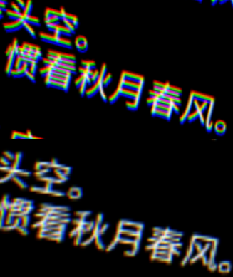
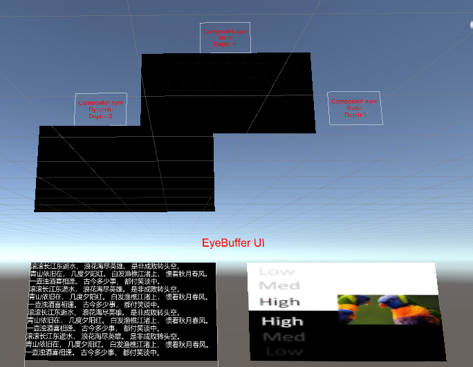
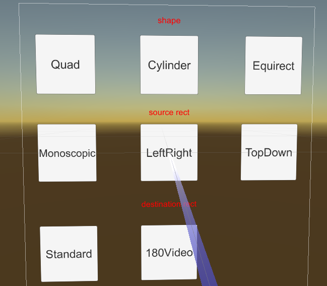

合成层
合成层（Composition Layers）可以将所有需要展示的物体进行分割，以达到诸如提高特定对象清晰度的目的。在最传统的渲染模式下，场景内所有的物体都将被渲染至同一张纹理（Eye Buffer）中，该纹理将由系统进行 ATW、畸变、合成等处理并最终显示在设备屏幕上。我们可以通过合成层技术，将场景内的特定对象渲染至一张纹理上，并将该纹理直接交由系统进行合成，因此减少了一次额外的纹理采样，提高了物体渲染的清晰度。
需要注意的是，合成层并非万能的，每一个合成层对于系统而言都会增加合成的开销，因此在使用合成层时，需要根据实际需求和设备性能进行合理的使用：
- 建议将合成层用于需要提高清晰度的物体上，例如 UI 界面、文字等。
- 合成层的数量不宜过多，一般情况下，单个场景的合成层数量控制在 4 层左右即可。
- 合成层的深度值需要合理设置，以确保合成层和 Eye Buffer 中的内容不会引发错误的遮挡效果。
合成层类型
将合成层根据类型划分可分为 Overlay 和 Underlay 两种类型：
- Overlay：Overlay 类型的合成层将纹理呈现在 Eye Buffer 前面，默认为该选项。对于需要始终出现在 Eye Buffer 前面的物体，如光标，可以使用 Overlay 类型的合成层。
- Underlay：Underlay 类型的合成层将纹理呈现在 Eye Buffer 后面。由于 Underlay 层依赖于渲染目标上的 alpha 通道。场景中的所有对象绘制到 Eye Buffer 后，你需要在 Eye Buffer 上构建一个 “洞”，使 Underlay 纹理透过这个 “洞” 显示出来。类似 UI 界面这样的物体，可能会被 Eye Buffer 内的其他物体所遮挡（如 UI 被手柄遮挡），此时可以使用 Underlay 类型的合成层。
可通过 compostion depth 来区分 Overlay 和 Underlay 类型的合成层：
- Eye Buffer 的深度值为 0。
- Underlay 类型的合成层深度值小于 0。
- Overlay 类型的合成层深度值大于 0。
合成层形状
合成层的形状决定了合成层的展示效果。合成层的形状有三种：Quad、Cylinder 和 Equirect：
- Quad：具有四个顶点的四边形平面纹理，通常用来显示场景中的文本或信息。
- Cylinder：具有柱面弧度的圆柱形纹理，通常用于显示曲面 UI 界面。若使用 Cylinder，则：
- Transform 中心将作为 Cylinder 的中心，Transform 的尺寸将作为 Cylinder 的尺寸，且 Cylinder 中 Transform 的尺寸均为全局尺寸（Global Scale）。其中，Z 作为 Cylinder 的半径，Y 作为 Cylinder 的高，X/Z 作为 Cylinder 的弧长。
- 必须将摄像机放置在圆柱内切球内。如果摄像机接近内切球表面，合成层将无法显示。
- Equirect：球体纹理，通常用于显示 360/180 全景纹理。
- Radius 参数用于指定圆柱的半径，当设置为 0 或者正无限大（1.0f/0.0f）时，表示无限大的半径。球面半径无限大时，其展示效果如同空场景中的天空盒。
- Destination Rects 下的 X 参数无用；W 参数映射到中心角，关于中心点坐标 (0, 0) 对称。
纹理类型
合成层处理的对象为纹理，纹理类型可分为三种：
- 外部纹理：纹理内容是从 Unity 的渲染上下文外获取。在通常的使用案例下，为 Android Surface 直接获取纹理（例如：Android 播放器视频纹理），对于视频播放器等场景，需要使用外部纹理。
- 动态纹理：纹理内容在运行时会发生更新，例如：摄像机生成的 RenderTexture 图片。
- 静态纹理：纹理内容在运行时不会发生更新，如场景中的静态广告图片。
纹理
针对使用在合成层上的纹理，可以有以下的设置：
Texture Rects
勾选 Texture Rects 选框后，可配置 Source Rects 和 Destination Rects 相关参数。
若选择自定义 Source Rects 和 Destination Rects（即选择 Custom 选项），则需确保 X、Y、W、H 的值位于指定区间内：X：\([0,1)\)、Y：\([0,1)\)、W：\((0,1]\)、H：\((0,1]\)。
透明度
alpha 参数用于设置纹理的透明度，取值范围为 \([0,1]\)。
示例
CompositeLayer 场景是用来说明合成层效果的。合成层的设计是为了提高平面 UI 的清晰度。在传统的渲染管道中，UI 纹理必须首先被渲染到 Unity 管理的颜色缓冲区，然后 Unity 管理的颜色缓冲区将被渲染到屏幕缓冲区。而使用合成层时，目标 UI 纹理可以直接由本地渲染。因此，可以减少由采样引起的失真。
在 YVR 设备上运行 CompositeLayer 场景时的屏幕截图如下：

Caution
由于合成层是由 YVR 设备的原生系统渲染的，所以内容不能在 Unity 编辑器中显示。
下面的部分是由 Unity Eye Buffer 渲染的界面，上面的部分是用合成层渲染的。左边的部分是动态纹理，右边的部分是静态纹理。
使用合成层（上部）和 Unity Eye Buffer（下部）渲染的详细区别如下：

Caution
在细节图像中可以看到一些色散，这是为抵消镜头造成的色散而产生的。因此，在使用设备时，不会看到所有的色散.
合成层示例
请参考以下示例项目。
打开一个新项目或当前项目。
导入最新版 SDK。
在 Project 面板下，选择 Pacakages > YVR Core > Scenes > CompositeLayer。
在 CompositeLayer 文件夹中，选择 CompositeLayer.unity 打开该场景。
在 File > Build Settings... 下，选择 Add Open Scenes。
选择 Build 并为文件命名。
在设备上安装 APK 文件。
该场景显示不同深度值遮挡效果、动态和静态图像的效果。

图形雨矩形示例
请参考以下示例项目。
打开一个新项目或当前项目。
导入最新版 SDK。
在 Project 面板下，选择 Pacakages > YVR Core > Scenes > CompositeLayer。
在 CompositeLayer 文件夹中，选择 CompositeLayerShapeAndRect.unity 打开该场景。
在 File > Build Settings... 下，选择 Add Open Scenes。
选择 Build 并为文件命名。
在设备上安装 APK 文件。
该场景显示形状切换、设置源矩形和目标矩形的效果。

Underlay vs Overlay
由于原生系统需要对多个图层进行合成，因此需要知道所有图层的顺序。这个顺序是由合成层的深度决定的，Unity Eye Buffer 的深度被设置为 0。而所有深度大于 0 的层被称为 Overlay，而深度小于 0 的层被称为 Underlay。
底层将首先被绘制，然后是 Unity Eye Buffer，最后是 Overlay。因此，Unity Eye Buffer 将覆盖 Underlay，而 Overlay 将覆盖 Eye Buffer。
为了让 Underlay 正常显示，而不是被完全覆盖，需要在 Unity Eye Buffer 中开一个孔。着色器 YVR/UnderlayPuncher 被设计用来生成这样的孔：

Tip
示例场景中左上角的图层是 Underlay。